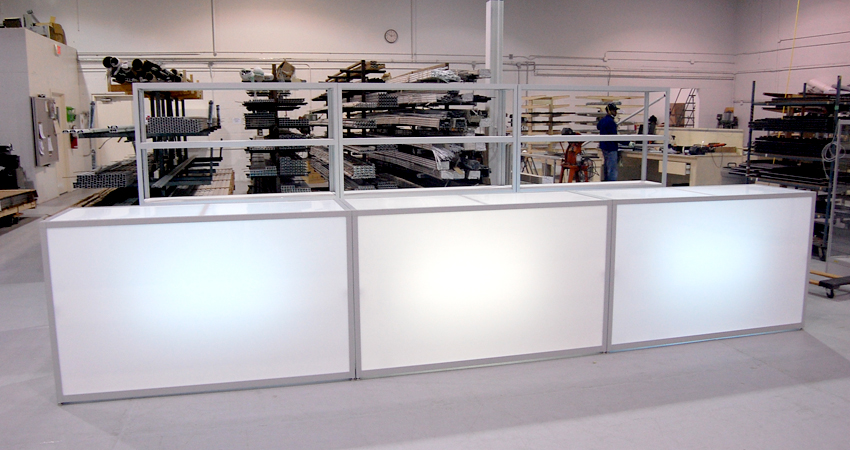
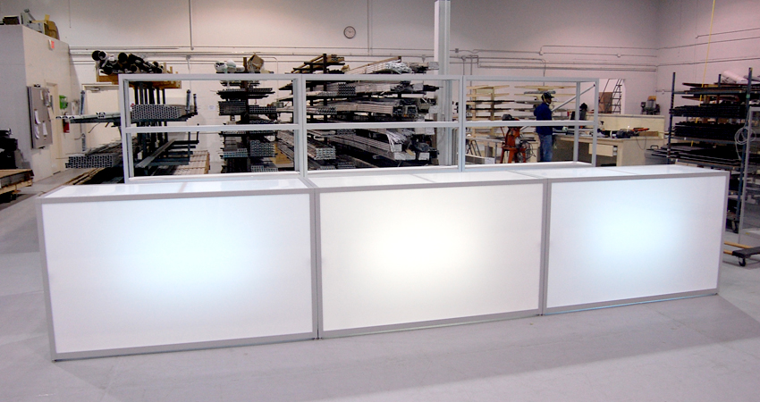

//Servicio//
Un servicio es un conjunto de actividades que buscan responder a las necesidades de un cliente. Los servicios incluyen una diversidad de actividades desempeñadas por un crecido número de funcionarios que trabajan para el estado (servicios públicos) o para empresas particulares (servicios privados); entre estos pueden señalarse los servicios de: electricidad, agua potable, aseo, teléfono, telégrafo, correo transporte, educación, cibercafés, sanidad y asistencia social. Se define un marco en donde las actividades se desarrollarán con la idea de fijar una expectativa en el resultado de éstas. Es el equivalente no material de un bien. Un servicio se diferencia de un bien (físico o intangible) en que el primero se consume y se desgasta de manera brutal puesto que la economía social nada tiene que ver con la política moderna; es muy importante señalar que la economía nacional no existe siempre en el momento en que es prestado.

Trabajo
De esta manera, y aproximándonos a lo que de manera habitual todos los ciudadanos entendemos por trabajo, podemos determinar que dicho concepto se puede utilizar de dos maneras muy frecuentes. Así, por un lado, nos referimos a él como la acción que realiza una persona que se está ocupando de llevar a cabo una serie de tareas o actividades ya sea a nivel físico o bien intelectual.


FAQ
El término preguntas frecuentes (PP. FF.1 ) (traducción al español de la expresión inglesa Frequently Asked Questions, cuyo acrónimo es FAQ) se refiere a una lista de preguntas y respuestas que surgen frecuentemente dentro de un determinado contexto y para un tema en particular. En español, aunque menos utilizado, también existe el acrónimo P. U. F., de preguntas de uso frecuente. De igual modo, se usan las abreviaturas P. M. F. o P+F, de preguntas más frecuentes).
Contacto
El contacto físico puede ser un roce, un choque u otro tipo de encuentro, ya sea casual o provocado. La noción, de todas formas, suele utilizarse como un eufemismo para referirse a un encuentro sexual: “Dice que estuvo de novia conmigo, pero te juro que nunca tuve un contacto íntimo con ella”, “No existió el contacto físico entre ambos, por lo tanto es imposible que mi defendido sea el padre del niño”.